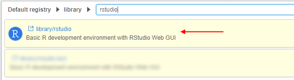
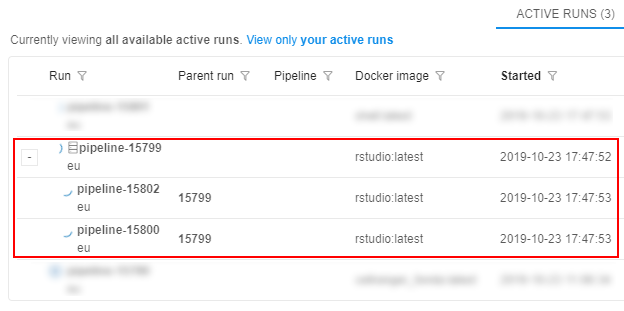
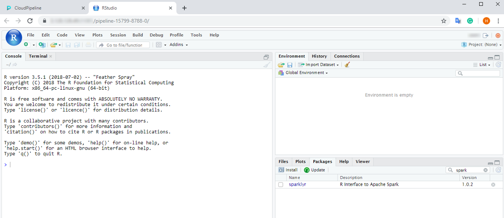
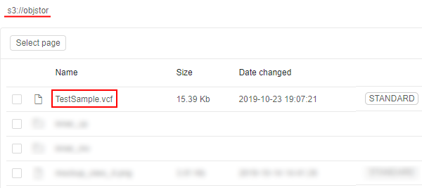
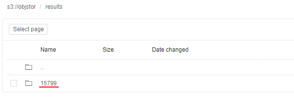
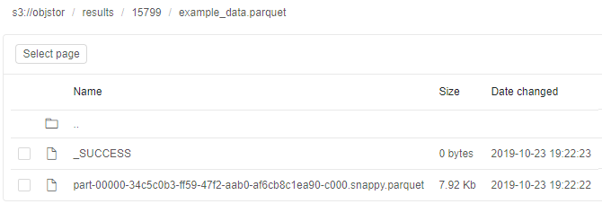

15.4. Interactive service examples
To run a Tool or a Pipeline as an Interactive service you need to have EXECUTE permissions for that Tool/Pipeline. For more information see 13. Permissions.
On this page, you'll find examples of launching Interactive applications with various features.
Running Apache Spark cluster with RStudio Web GUI
Launch the RStudio tool with Apache Cluster
- Navigate to the list of registered Tools and search for the RStudio Tool:
 - Go to the Tool page and click the arrow near the Run button → Select "Custom Settings".

- At the Launch page select Node type (from which the subsequent cluster will consist).
Note: it is recommended to select nodes with more memory volume, because it is critical for Spark's in-memory processing - Click the Configure cluster button:
- At the popup select the Cluster tab, set the number of Child nodes to create (e.g. 2 or more), then tick the Enable Apache Spark checkbox and confirm by the OK button:

Or you could enable Apache Spark by manually adding the system parameterCP_CAP_SPARKwithtruevalue:

- Click the Launch button:
 At the popup confirm the launch.
At the popup confirm the launch. - Check that the cluster has appeared in the ACTIVE RUNS tab of the Runs page:
 - Wait until all components are initialized. The cluster tile in the ACTIVE RUNS tab will turn into yellow. Click on the parent run to open the Run logs page:

- At the Run logs page there are two endpoints:
- RStudio - it exposes RStudio's Web IDE
- SparkUI - it exposes Web GUI of the Spark. It allows to monitor Spark master/workers/application via the web-browser. Details are
available in the Spark UI manual
- Click the RStudio endpoint. This will load RStudio Web GUI with the pre-installed
sparklyrpackage in the new tab of the web-browser:

From here one can start coding in R using sparklyr to run the workload over the cluster.
Example of sparklyr script
It is assumed that a Spark cluster with the RStudio Web GUI and sparklyr package is up and running, as shown in the previous section.
Accessing datasets from the Cloud Pipeline's Spark
- Access to data via File Storages
If the user has an access to the FS storage - then datasets from such storage can be accessed via thefile://schema or without a schema at all. But this approach may start to degrade once there is 100+ cores cluster with a lot of I/O operations. - Access to data via Object Storages
Note: this feature is available only forAWSCloud Provider.
Spark cluster configuration uses the stable version of the Hadoop-AWS module, that allows to directly access (read/write) the datasets in the S3 buckets using Spark jobs.
The only difference with the filesystem access - is the URL schema.s3a://prefix shall be used instead ofs3://. E.g. if there is a user's S3 bucket named "test-object-storage" with the "test_dataset.parquet" dataset - then it can be accessed as "s3a://test-object-storage/test_dataset.parquet" from thesparklyrcode (or any other Spark job).
Prepare and run sparklyr script
This section provides prepare and run of R script that shows how to connect to the Spark cluster, deployed in the Cloud Pipeline, and read/write the data from/to object data storage.
Note: we will use S3 bucket with directly access to data as described above. This script will not work for other Cloud Providers.
For this example, a small public VCF file will be used. It is located in some S3 bucket e.g.:

So, prepare the following script:
library(sparklyr)
# Cloud Pipeline provides the SPARK's master URL in SPARK_MASTER variable
# SPARK_HOME variabe is set by the Cloud Pipeline and will be used by sparklyr - no need to specify it explicitly
# Spark version will be retrieved by sparklyr from the $SPARK_HOME/RELEASE file - no need to specify it explicitly
master <- Sys.getenv("SPARK_MASTER")
sc <- spark_connect(master=master)
# Get the current Cloud Pipeline's unique Run ID to write the results into the unique directory
unique_id <- Sys.getenv("RUN_ID")
# Setup input VCF (tab-delimited) file location and the resulting parquet file
# Note that both input and output are located in the S3 bucket and are addressed via s3a:// schema
example_data_vcf_path <- "s3a://objstor/TestSample.vcf"
example_data_parquet_path <- paste("s3a://objstor/results", unique_id, "example_data.parquet", sep="/")
# Read VCF from the storage and convert to the DataFrame
example_data_df <- spark_read_csv(sc = sc,
name = "example_data_vcf",
path = example_data_vcf_path,
header = F,
delimiter = "\t")
# Write DataFrame as a parquet to the storage
spark_write_parquet(example_data_df, path = example_data_parquet_path)
- Paste that script into the RStudio console and launch it:

- Once script is finished - resulting parquet will be written to the storage. To check it open in the Library the storage, that was specified for output results:
- Open the path for output results - you will see the directory with the name equal to the Run ID that contains resulting files:


Monitoring execution via Spark UI
- To view the details of the jobs being executed in Spark, how the memory is used and get other useful information - the SparkUI endpoint from the Run logs page shall be opened.
While executing the example script, open the Spark UI endpoint:
- A list of active applications and workers will be shown:
- To get the details of the underlying jobs, executed by the Spark instance, click the application name:

The following page will be opened:

For more details about Spark UI opportunities see here.